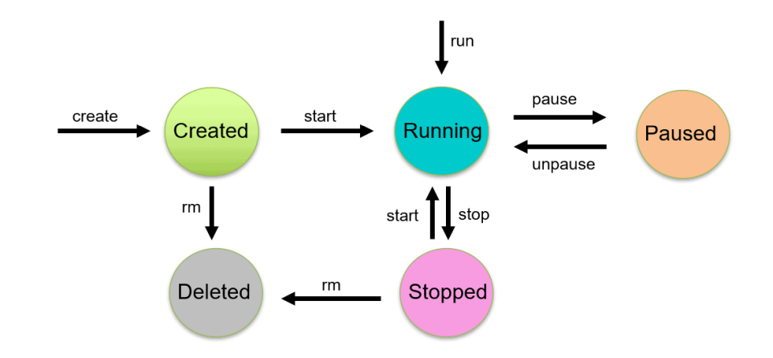
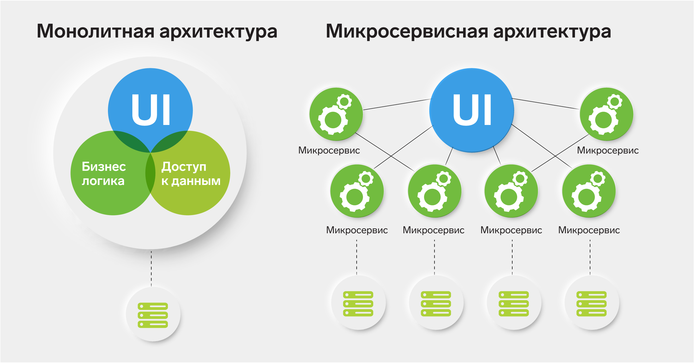

Сурцов Владимир Владимирович
Контейнеризация — технология в разработке программного обеспечения, которая позволяет упаковать приложение вместе со всем его окружением — кодом, системными библиотеками, зависимостями, настройками и runtime-средой — в один стандартизированный блок — контейнер. Этот контейнер затем может быть запущен на любой платформе, поддерживающей контейнеризацию: на локальных устройствах, в облаке или на виртуальных серверах.
В основе контейнеризации лежат механизмы изоляции ресурсов и процессов, предоставляемые ядром операционной системы, такие как namespaces и cgroups (в Linux). Namespaces обеспечивают изоляцию видимости системных ресурсов (файловой системы, сети, процессов и т. д.), а cgroups ограничивают и контролируют потребление ресурсов (процессорного времени, памяти, дискового ввода-вывода) для каждого контейнера. Это позволяет запускать множество независимых экземпляров приложений на одной хост-машине без взаимного влияния.
Основное отличие заключается в уровне абстракции. Виртуализация эмулирует аппаратное обеспечение и запускает полноценные гостевые операционные системы для каждой виртуальной машины. Контейнеризация же виртуализирует операционную систему, изолируя только процессы и ресурсы приложения. Это делает контейнеры более легковесными и быстрыми.
Виртуализация — лучший выбор, когда требуется максимальная изоляция, безопасность или необходимо запускать разные операционные системы. Часто используется для размещения унаследованных приложений (legacy), баз данных или в качестве основы для инфраструктуры виртуальных рабочих столов (VDI).
Контейнеризация — идеальный вариант для современных облачных приложений, микросервисов, процессов непрерывной интеграции и доставки (CI/CD), где важны скорость, масштабируемость и эффективное использование ресурсов.

Основная роль: Обеспечивает базовые механизмы изоляции и управления ресурсами. Механизмы:
Пространства имён создают иллюзию отдельной, независимой копии операционной системы для каждого контейнера. Хотя физически все контейнеры работают на одном ядре, благодаря пространствам имён каждый контейнер видит своё собственное представление системы.
Механизм используемый для изоляции сетевого пространства.
Механизм используемый для изоляции иерархий файловых систем.
Механизм используемый для изоляции дерева процессов.
Механизм используемый для UID/GID (идентификаторы пользователей и групп).
Правильно организованная структура приложения существенно влияет на успешность его работы в контейнерной среде.

Микросервисная архитектура — это архитектурный стиль, при котором приложение строится как совокупность небольших, слабо связанных сервисов, каждый из которых: